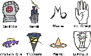

Lucifer原注：在GAMERPRO的盛情邀约下，我提笔写下了这篇介绍“被遗忘国度”(Forgotten Realm)的文章.虽然，“被遗忘国度”系列许多出版品并没有中文翻译的版本；但笔者希望透过这篇文章，能够让国内的玩家们对整个世界有个初步的了解，进而在游戏进行的过程中，能够如国外的玩家一样，感到如同再访老友一样的熟悉。
{kind=link}
“被遗忘国度”辉煌的过去在此先暂时按下不表；让笔者在这里先解答一下每个初次进入“被遗忘国度”的玩者必定会有的疑问：到底什么是“被遗忘国度”？
“被遗忘国度”是由TSR公司所设计的纸上角色扮演游戏的设定，原先是提供给“专家级龙与地下城”(Adavnced Dungeons and Dragons)系统所使用的。当初是爱德·格林沃(Ed Greenwood)替自己在家玩的“龙与地下城”（Dungeons and Dragons，比专家级系统要稍微简略一点的纸上角色扮演游戏设定）所设计的一个世界。TSR收购了这个设定，并且在一九八七年同时推出了设定集和“月影三部曲”(Moonshae Trilogy)小说的第一本，“月影黯行者”(Darkwalker on Moonshae)。稍后，爱德·格林沃也和“黑暗精灵”（Darkelf）系列的作者萨尔瓦多(R.A. Salvatore)成为被遗忘国度中最受欢迎的两名小说作者之一。
与龙枪系列由西克曼和魏丝两名作者主导的情形不同，被遗忘国度从一开始就是全系列作者合作创造的历史；所有的主要历史事件或是事件的更动都需要经过编辑群的同意才行。因此，它并没有像龙枪一样面对了正史、野史之争，而是创造出了一个作品数量更多，“正史”更多的世界。也因此，被遗忘国度系列的设定，即使在 TSR经历层层转手、并购的过程之中，也和龙枪一样继续繁盛的发展下去，并没有关闭生产线的消息。“浩劫残阳”（Darksun）和“异域镇魂曲” (Planescape:Torment)的“异界”(Planescape)设定则都因为商业上的考量而遭到了关闭生产线的命运。“被遗忘国度”能够成为TSR的长青树，自然有其独到之处。
| “被遗忘国度”是位在亚贝尔·托瑞尔(Abeir-Toril，通常我们会简称为托瑞尔世界，如图)中的正统奇幻世界。在此地，魔法十分兴盛，各种信仰和牧师也非常的风行。顺带一提，被遗忘国度的特征之一就是诸神林立，正教、邪教遍布世界各地，甚至连没有神明的伪教也层出不穷；光是在设定中出现的诸神就分成许多个阶层。所以，玩者会在游戏中同时遇到数种信仰的牧师自然也不足为奇了。整个被遗忘国度西方，文明最繁盛地区的设定就像是文艺复兴时期的欧洲或是英国一样：贸易盛行、商旅来往于各地之间，各种职业的公会四处林立。自然，在这样的背景底下政治、经济势力的彼 |
此角力、暗潮汹涌也是少不了的。而在各种凡间势力的对抗之中，又加上了善神与邪神之间对立竞争的冲突，自然更丰富了整个被遗忘国度世界的设定与深度。除此之外，被遗忘国度中的设定还包括了位在马兹提卡(Maztica)，类似古玛雅文明的丛林大帝国。卡拉-特(Kara-Tur)是一个混合了蒙古和日本文明的东方文化大杂烩帝国。以及一个曾经是TSR独立游戏设定的AL-QADIM（和阿拉丁的读音非常类似的设定），模仿古阿拉伯文明的此设定也被吞并进这个世界中。在被遗忘国度的设定中，可说是吸收了人类世界所有曾经存在的古文明，包括了蛮族、爱斯基摩人、埃及人、阿兹特克人、日本文化、印度文化等等都是玩者在这个世界中会遇到的设定。因此，如果你刚看到大金字塔，却又随即遇到雕梁画栋的中国宝塔，也千万不要感到惊讶。在“被遗忘国度”中，本来就是有无限可能的。当然，在整个被遗忘国度的世界中，奇幻设定中的各种各样怪物和种族：半兽人、精灵、矮人当然也都没有缺席。因此，玩者在被遗忘国度中所遭遇到的文化歧异度可能真的超乎一般人的想象之外。
由于整个被遗忘国度的背景设定十分庞大，也因此在历法的设定上花了特别大的功夫。整个历法是由古代的一名叫做疯狂阿加萨的预言家所预先撰写出来的，如果某个年代中发生了什么特殊事件，他就会将这个年代以该事件的名称命名；稍后这个历法又由先知阿兰多继续补充下去。在人类的文明世界中，原先最常用的是“谷地奠基”(Dalereckoning)的记年方式。他们用人类和精灵在科曼赛尔立下奠基之石的当年订为谷地奠基元年（DR 0），之前的年代就用负数表示。但是，稍后，在诸神被神上之神打落人间的“乱世之年”(Year of Trouble)之后，人们又开始将该年(1358 DR)设定为现世之年(Present Reckoning，PR 0)。在乱世之年中，被打落人间的诸神必须寻回命运石板才能重回天界；因而，他们在人间掀起了一连串的征战。毁灭魔神Bane也在这次的斗争中被凡人给消灭了。这段故事就收录在小说“圣者三部曲”(Avatar Trilogy)中。在这一连串天崩地裂的大变动之后，被遗忘国度的整个世界也起了许多的变化。“柏德之门”的故事也正是描述在圣者三部曲中的邪神意图透过自己的子嗣在人间重掌大权的故事。因此，如果玩者在进行这个游戏之前有对这个事件有过大概的了解，会增进更多游戏的乐趣。
{kind=link}
 |
另外一个人气角色则是正好和魔法师这个职业相对应的黑暗精灵游侠，崔斯特·杜垩登(Drizzt Do'Urden)。玩者如果玩过“柏德之门”，相信应该对这位手持双刀，出招快捷绝伦，砍人有如斩瓜切菜，又同时嫉恶如仇的侠客印象深刻吧！他手上的两把神兵也让不少人想尽办法，即使降低声望也要获得。崔斯特是名诞生于被遗忘国度地底世界的黑暗精灵（Darkelf）。但是各位可别误会，这里的黑暗精灵可和龙枪中的黯精灵完全不同，他们可是经过了特殊演化之后所产生的精灵亚种，连整个价值和道德观都和地表世界有所不同。（左图:黑暗精灵各家族所专有的家徽，其中加红框者即为杜奎登家族的家徽） |
黑暗精灵的起源是这样的；在一万三千年前，在被遗忘的国度上精灵们彼此掀起了“皇冠战争”，战火延烧了三千年。艾瑞凡达（ARYVANDAAR）、麦叶理塔（MIYERITAR）、桑塔·欧斯瑞尔（SHANTEL ORTHREIER）、凯尔多莫（KELTORMIR）、艾理瑟（ILYTHIIR）以及其它的精灵王国在五场接续的大战中彼此征战。在第四次的皇冠战争中（大约在10,000DR时），在守护者（PROTECTOR）的牧师和大法师的指示下，艾理瑟腐败、邪恶的精灵被可瑞伦（CORELLON）的法术给转变成了黑暗精灵，并且被驱赶进永劫黑暗的幽暗地域中。
大约在四百年后，第一个黑暗精灵的文明崛起于幽暗地域。黑暗精灵的第一个大帝国是塔伦提瓦（TELANTIWAR），首都建立在于9,000DR时从矮人王国手中夺下的巴伦顿（BHAERYNDEN）巨大洞穴中。但是，重振文明的黑暗精灵依旧你争我夺，互相残杀。贵族对抗贵族、牧师攻击牧师，只为了争夺这新领土的统治权。这场战争在一阵突如其来的巨大爆炸中结束了，而这爆炸让巴伦顿的洞顶完全坍方。许多黑暗精灵和他们夺来的矮人都市一起被埋葬在这悲剧当中。现在已经变成露天巴伦顿洞穴后来被后人称为大裂隙（GREAT RIFT）。黄金矮人的祖先稍后重新在这块土地上定居下来，这块土地和附近错综复杂的洞穴就被称为地深领域（DEEP REALM）。
在接下来被称为大流亡的年代中，残存的黑暗精灵贵族和牧师们集合了苟活的同胞、奴隶和仅剩的装备逃入了幽暗地域。从那时之后，无数的城市和小聚落就如雨后春笋般的在旧塔伦提瓦帝国的领域中诞生及殒落。
由于蜘蛛神后罗丝女神的教条，大多数黑暗精灵的城市都是由母系社会中的女祭司所统治的。在遵循罗丝之道的城市中，黑暗精灵们通常是由几个贵族家庭以严格的科层体系所统治着。一小群顶尖的贵族家族则会组织成执政议会，议长则是第一家族中的最高阶女祭司。每个家族同样的也由一名最高阶级的女祭司统治，这些女性被称为主母。
从不间断的致命竞争在不同的家族间持续着。同样的，女祭司间彼此也毫不懈怠的勾心斗角，以便能够获得更高的权位。这些明争暗斗都服从一个铁律，“如果无法证明，就从未发生过。”
也因此，黑暗精灵成为被遗忘国度中相当受到欢迎的一个种族。他们混合了优雅和残酷的特性也吸引了不少人的注意。而叛离自己同族血脉，行侠仗义的崔斯特也自然成为最受欢迎的人物之一。
另外，在被遗忘的国度中，玩者几乎不可避免会被卷入两个秘密集团的冲突中。其中一个是善良力量的代表“竖琴手同盟”(Harpers)：他们是由人类和精灵的吟游诗人以及游侠所组成的秘密团体。不管在城市中或是野外都有他们的成员在秘密活动着。他们的任务就是保持世界上的平衡，并且破坏许多邪恶者的阴谋。
| 散塔林会(Zhentarim)则是另一个主要在散提尔堡、藏黑镇和乌鸦要塞活动的邪恶组织。（右图:散塔林会各分部所使用的徽号）他们又被称为暗黑情报网，成员大多数是邪恶的牧师、战士、盗贼和强大的法师。散塔林会主要的目标则是控制被遗忘国度中最繁华地区的贸易信道，也因此，时常在明里暗里和竖琴手同盟发生许多的冲突。在“柏德之门”中玩者就曾经遇到不少提到这两个组织的蛛丝马迹，相信也应该对这两个团体有了一定程度的认知。在未来即将推出的“柏德之门二：安姆帝国的阴影”中，应该也少不了这两个组织之间的恶斗。 |  |
| 在大概了解了被遗忘国度的过去之后，就让我们看看被遗忘国度系列的未来吧！在笔者落笔之时已经上市的“冰风谷”(Ice Wind Dale)（左图:冰风谷游戏的标志）是款套用相同Infinity引擎的角色扮演游戏。在整个画面的呈现上比“柏德之门”要精致了许多；不过， INTERPLAY也开宗明义的表示了，这个游戏就是以战斗为主体的游戏。玩者每每必须要杀进和敌人之间比数悬殊的险境之中，甚至是弓箭手和法师联合组阵的可怕陷阱中。不过，它快节奏的战斗要素和大量的经验值、敌人以及宝物，想必可以让在“柏德之门”中感到若有所失的玩者好好的满足嗜血的欲望吧！ |
|
另外，号称对话数量更超过“柏德之门”（右图:柏德之门英文版游戏封面）的续集，“柏德之门二：安姆帝国之阴影”也是众多玩者引颈期盼的大作。本游戏号称画面将更加华丽、支线剧情也将更加众多，玩者甚至可以从前代传送人物过来，再度延续整个冒险的经历。甚至，在游戏中玩者也将一探地底的幽暗地域 (Underdark)和天外星界(Astral Plane)，体验一下完全不同于前作的环境设定！光是想到这一点，就让笔者心跳加速了，真希望它能够赶快上市！甚至，TSR也因为柏德之门的成功而趁胜追击，准备在产品上市的同时推出同名改编小说，以及利用柏德之门来解说“龙与地下城”系统的手册；(左图：这就是TSR利用柏德之门威力来推广纸上游戏的出版品)看来，现在的计算机角色扮演游戏青出于蓝，也有了反身拉抬纸上角色扮演游戏的能力了。 |
|
另外，INTERPLAY也计画在年底推出多人联机的角色扮演游戏：“绝冬城之夜”(Neverwinter Night)。画面让人期待的绝冬城之夜）这个游戏目前号称拥有六十四人同时上线的能力，但它真正的竞争力并不只于此，事实上，它能够让玩者自行创造各式各样的城市和地下城，甚至是各种杀敌冒险的任务。换句话说，玩者将有办法像纸上角色扮演游戏中一样，设计专属于自己的角色扮演游戏来，并且邀请其它人进入这个世界来冒险和探索。光是这样的可能性，就让许多传统的玩家跃跃欲试。想想看，如果“暗黑破坏神”(Diablo)的剧情可以无限延伸，有各种各样的变化，那会是什么样的情景？“绝冬城之夜”正是把这样的可能性带到我们面前。 |
另外，当初打响金盒子系列名号；同时也是最早将被遗忘国度送进计算机屏幕的SSI公司这次也卷土重来。
| 重新推出了“光芒之池”(Pool of Radiance)（左图：这就是当年最早的被遗忘国度计算机游戏“光芒之池”的小说封面。右上:这则是当年为整系列游戏划下句点的“黑暗之池”同名小说，描述菲兰城被邪恶生物传送进异世界的可怕故事），系列的续作：“光芒之池二：神秘札纳的废墟”(Pool of Radiance: The ruin of Myth Drannor)。这个游戏在画面上着墨颇多，从目前释出的图片上看来，这是个潜力颇大的游戏，它在GAMESPOT上还获得了E3展中最受期待的游戏评价。在游戏中，文明中心菲兰城地底下的光芒之池又再度激活了，并且释放出可怕的能源波，把一切触及的生物都变成了不死生物。玩者追寻着这一切变动的来源，来到了精灵废弃的古城：神秘札纳的废墟中……这也是计算机游戏中第一个采 |
用“龙与地下城”第三版系统的游戏，许多过往难记的系统（譬如说AC值是越低越好等等的特殊运算法）都会在这套系统中以改头换面的方式出现。（如下四图:这些都是光芒之池二中的场景，看的出来绘图的精细度十分的高。甚至拥有超越“暗黑破坏神二”的实力。）
 |
|
放眼未来，有这么多被遗忘国度的计算机游戏即将上市，读者们在读完这篇文章之后，大概也会对整个世界的设定有了一个大概的了解；相信，在未来进行这些游戏的时候，应该不会再有丈二金刚摸不着头脑的情形出现了！玩者如果还有进一步的疑问，不妨来信询问笔者，笔者会尽量解答各位的疑惑的。
最后，笔者特地附上一段“黑暗精灵”中译本小说的试阅章节，让玩者可以更深入的了解崔斯特这个人物；因为，据说在“柏德之门二”中，他又将再度出现；而且，这次他将会记得上次是谁杀死过他！他可不会轻易的放过你！（曾刊载于gamerpro网站）